שפה שמדברת על תהליך
התמקדתי בשפה עיצובית שמדברת על תהליך ועומק רגשי, כי זה הבידול המרכזי של העסק.
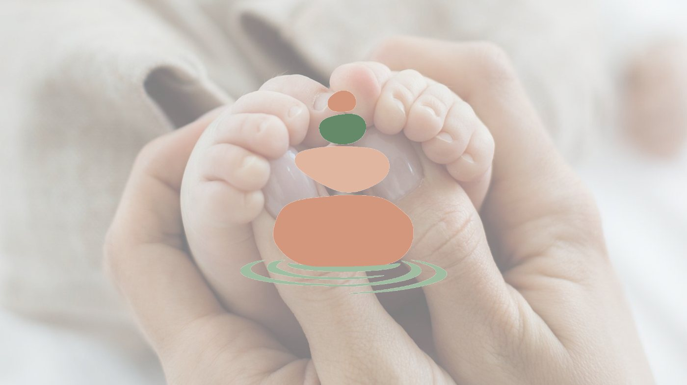
לסיפור המלאקייס סטאדי
מיתוג לליווי נשים ומשפחות אחרי לידה
הודיה היא אחות לשעבר בפגייה עם ניסיון של עשור בליווי מצבים מורכבים סביב לידה. אחרי שעזבה את בית החולים ופתחה עסק עצמאי, היא רצתה ליצור מותג שיבטא את הליווי העמוק שהיא נותנת לנשים ולמשפחות אחרי לידה.
האתגר היה לבנות מותג שמצליח להעביר גם רגישות ותמיכה וגם מקצועיות וניסיון רפואי. בנוסף, השם והמיתוג הראשוניים לא הצליחו לבטא את המורכבות של העבודה שלה.
בתהליך אסטרטגי ועיצובי בנינו יחד שם חדש לעסק, מערכת מסרים ושפה ויזואלית ייחודית שמבוססת על רעיון של תהליך והתבוננות פנימית.
התוצאה היא מותג שלם שמאפשר להודיה לתקשר בצורה מדויקת יותר עם קהל היעד שלה, ולהציג את הליווי שהיא נותנת בצורה ברורה ובטוחה.
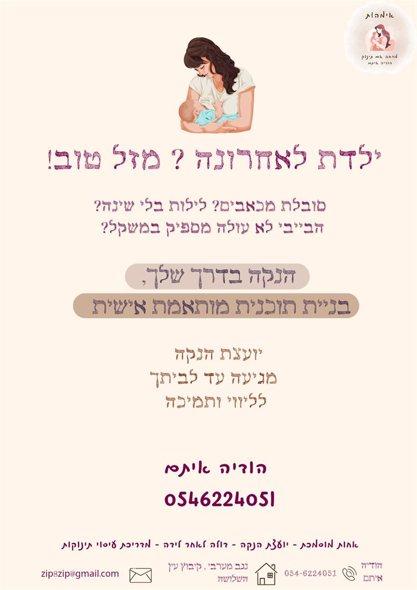
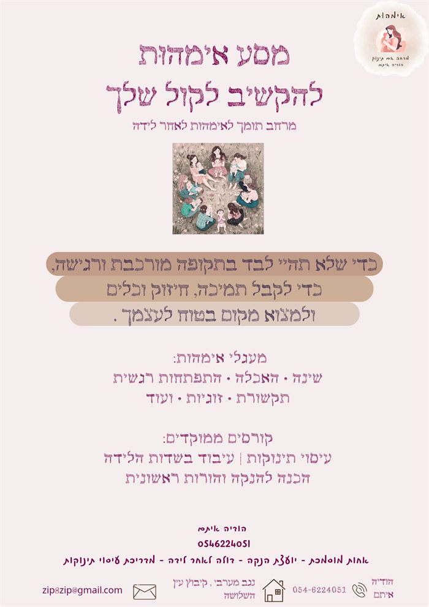
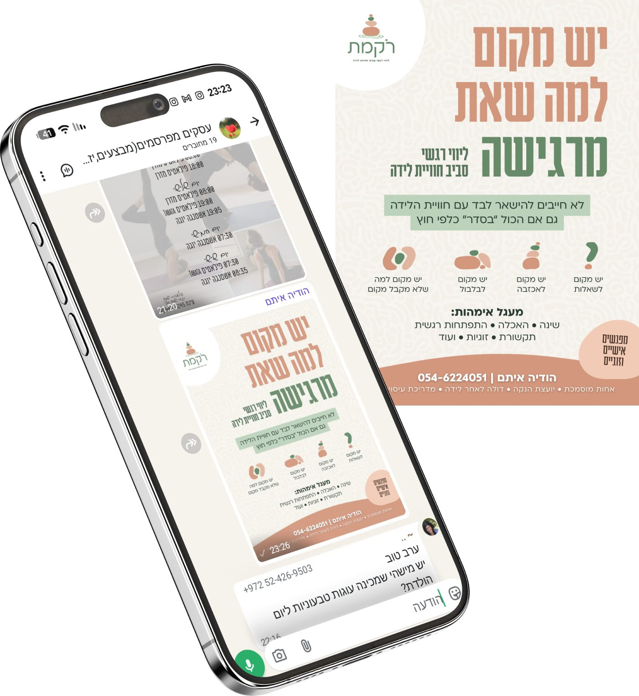
הבעיה
הודיה פתחה עסק לליווי נשים ומשפחות בתקופה הרגישה שאחרי הלידה. השירותים שלה כוללים:
המותג הראשוני שלה נקרא "אימהות", שם שנולד מהרצון ליצור "אי של מהות" - מקום בטוח ותומך לנשים. אבל מהר הבנו שהשם מצמצם את הסיפור שלה ופונה רק לאימהות, בעוד שהליווי שלה נוגע גם בזוגות, במשפחה ובתהליכים רגשיים רחבים יותר.
בנוסף, המותג היה בתחילת הדרך ולא הייתה מערכת מסרים או שפה ויזואלית ברורה.
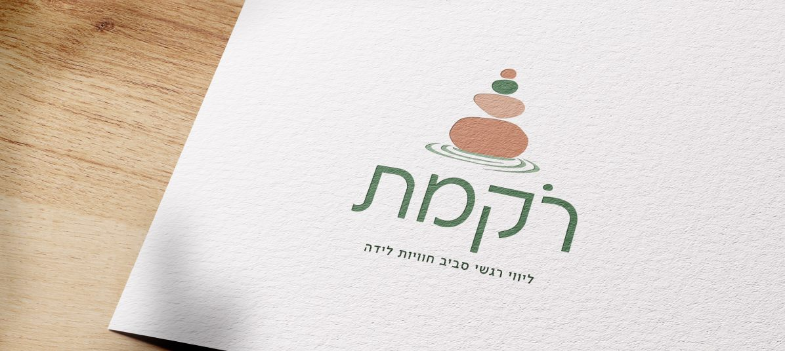
חיבור,
ליווי ושזירה
של חוויות
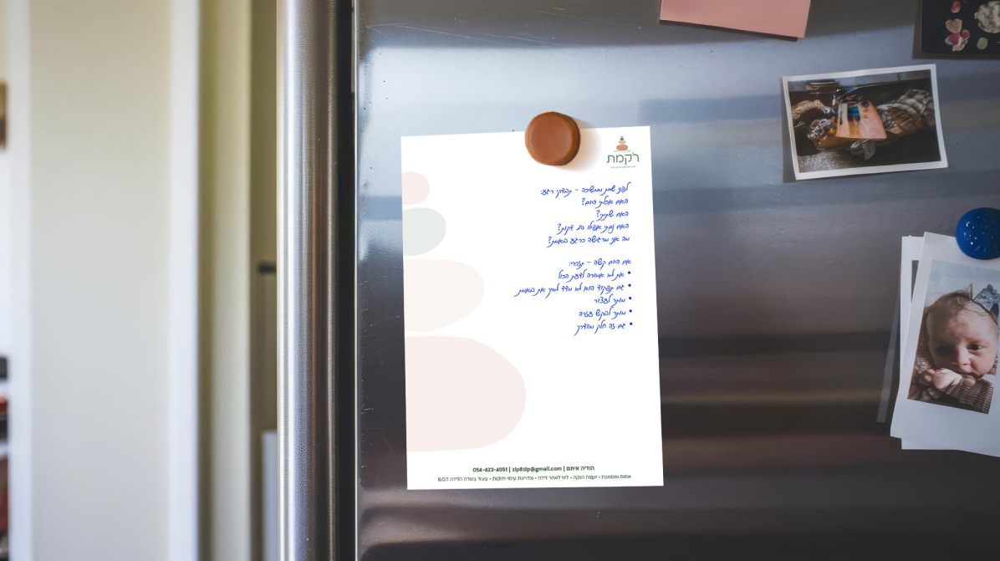
המטרה הייתה ליצור מותג
שמרגיש עמוק יותר ומבטא תהליך.
התהליך
התחלנו בשיחת עומק כדי להבין את הסיפור של העסק ואת הצורך שהוא פותר לנשים ולמשפחות אחרי לידה. במהלך השיחה הבנו שהליווי של הודיה לא מתמקד רק בלידות רגילות, אלא גם במקומות מורכבים יותר כמו אובדן הריון או לידה שקטה - תחומים שכמעט לא מקבלים מקום אצל דולות אחרות.
בנוסף, להודיה יש ניסיון של עשור כאחות בפגייה, והיא חוותה מקרוב גם מצבים מורכבים וקשים. היה חשוב שהמיתוג יבטא גם את העומק הזה.
לאחר שלב המחקר והאסטרטגיה עברנו לתהליך של פיתוח שם חדש לעסק, ומשם פיתחנו את השפה הוויזואלית של המותג.
ליווי
אחרי לידה
מקום גם
למצבים מורכבים
עשור של
ניסיון בפגייה
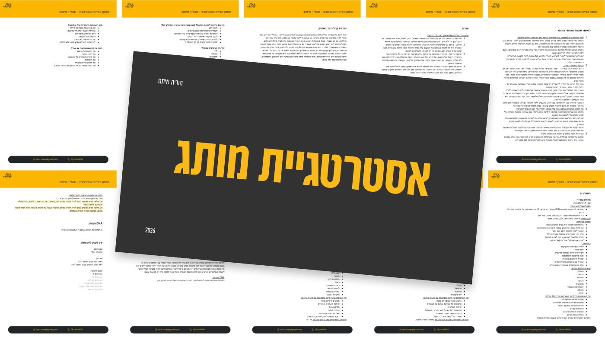
האתגרים
האתגר המרכזי היה ליצור מותג שמצליח להעביר כמה רבדים בו זמנית: מצד אחד רגישות, תמיכה והתבוננות פנימית. מצד שני מקצועיות וניסיון שמגיעים מעשור של עבודה בפגייה.
בנוסף, היה צורך להתרחק מהשפה הוויזואלית הנפוצה בתחום, שמבוססת לרוב על אייקונים של היריון או תינוקות. המטרה הייתה ליצור מותג שמרגיש עמוק יותר ומבטא תהליך.
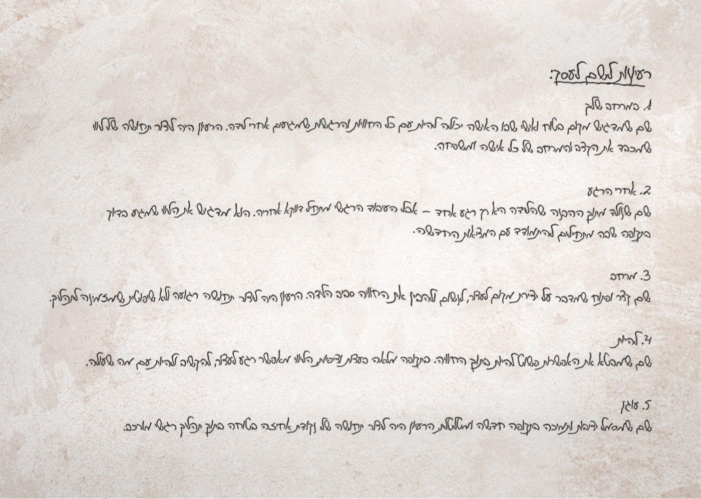
השם
השם שנבחר בסופו של דבר הוא "רֹקמת".
שם שמבטא תהליך עדין של חיבור, ליווי ושזירה של חוויות.
השם החדש יוצר שפה שמדברת על ליווי ולא רק על רגע הלידה עצמו - ומשם פיתחנו את השפה הוויזואלית של המותג.
הפתרון
כדי לבטא את הרעיון של תהליך והתבוננות פנימית, בנינו שפה ויזואלית שמבוססת על שני סמלים מרכזיים:
השילוב ביניהם יוצר סמל שמדבר על תהליך, תמיכה וליווי.
בנוסף יצרנו מערכת אייקונים ייחודית שמבוססת על צורת הרוג'ום, כך שהשפה הגרפית יכולה להופיע גם בפוסטים, פלאיירים וחומרים נוספים.
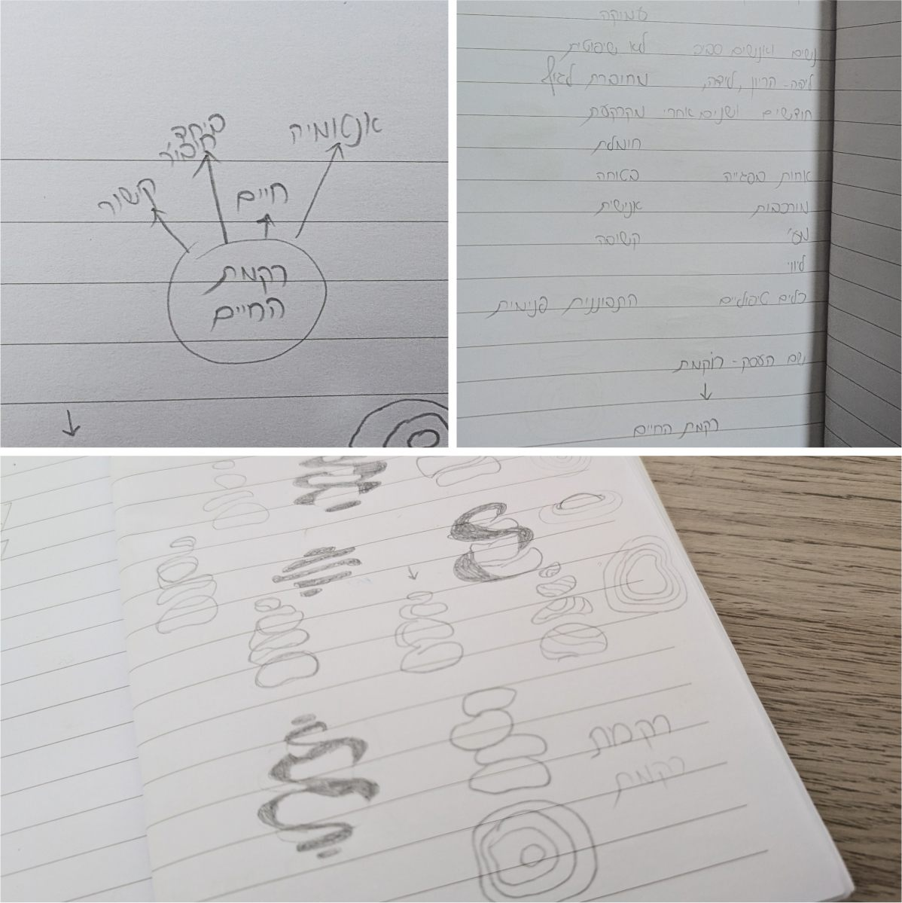
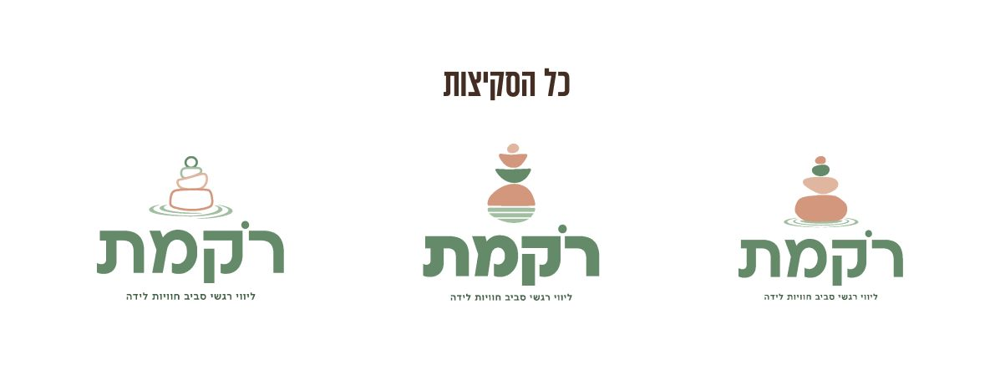
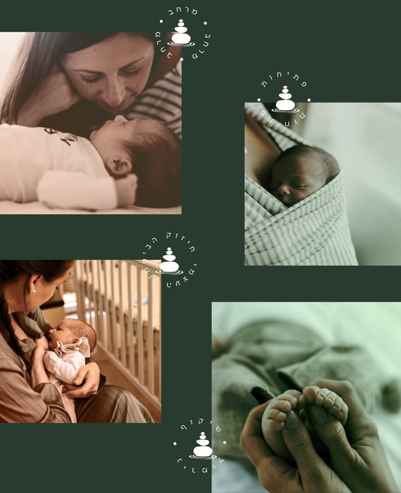
ההחלטות
התמקדתי בשפה עיצובית שמדברת על תהליך ועומק רגשי, כי זה הבידול המרכזי של העסק.
ויתרתי על אייקונים קלאסיים של היריון ותינוקות, כי הם מצמצמים את הסיפור ופונים לקהל צר יותר ממה שהודיה באמת רוצה ללוות.
בחרנו לבנות שפה ויזואלית שמבוססת על הרוג'ום, כולל סט אייקונים ייחודי שניתן להשתמש בו בכל החומרים השיווקיים.
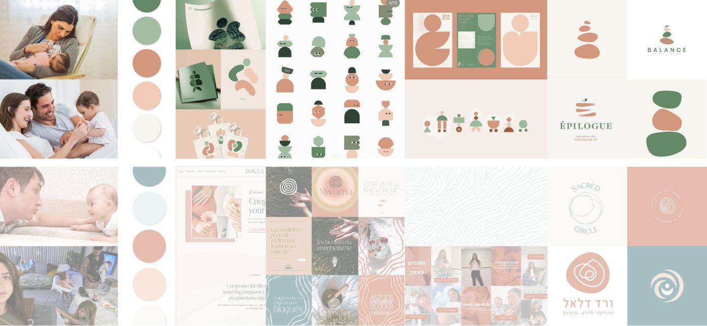
* הצבעים נדגמו מהלוגו – כדאי לעדכן לקודים המדויקים מספר המותג
התוצאה
נוצר מותג שמצליח להעביר עומק, רגישות ותהליך, ולא רק את רגע הלידה עצמו. השם החדש "רֹקמת" יוצר שפה שמדברת על ליווי ושזירה של חוויות, והשפה הגרפית מאפשרת להודיה ליצור תוכן בצורה אחידה וברורה.
הודיה קיבלה מערכת מסרים ברורה ושפה עיצובית שלמה, שמאפשרות לה ליצור תוכן ולהגיע לקהל היעד שלה בצורה מדויקת יותר. המותג החדש נותן לה ביטחון להציג את השירותים שלה בצורה ברורה - גם ברשתות החברתיות וגם בחומרים שיווקיים נוספים.
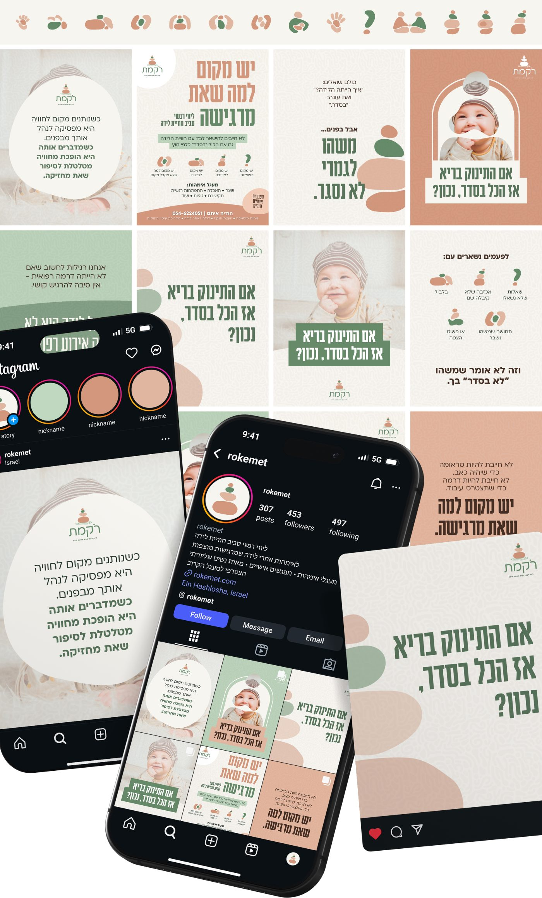
מה הודיה אמרה
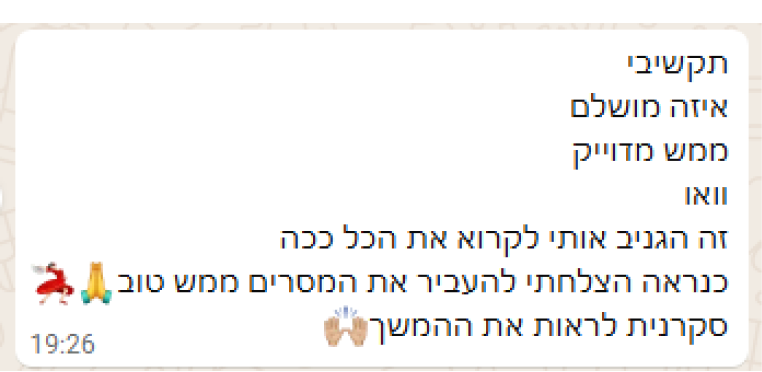
אבל המיתוג שלכם עדיין לא מצליח להעביר אותו בצורה ברורה, אשמח לעזור לכם להפוך אותו למותג שמספר את הסיפור שלכם בצורה מדויקת 😊
תשאירו פרטים ואחזור אליכם עד 2 ימי עסקים.